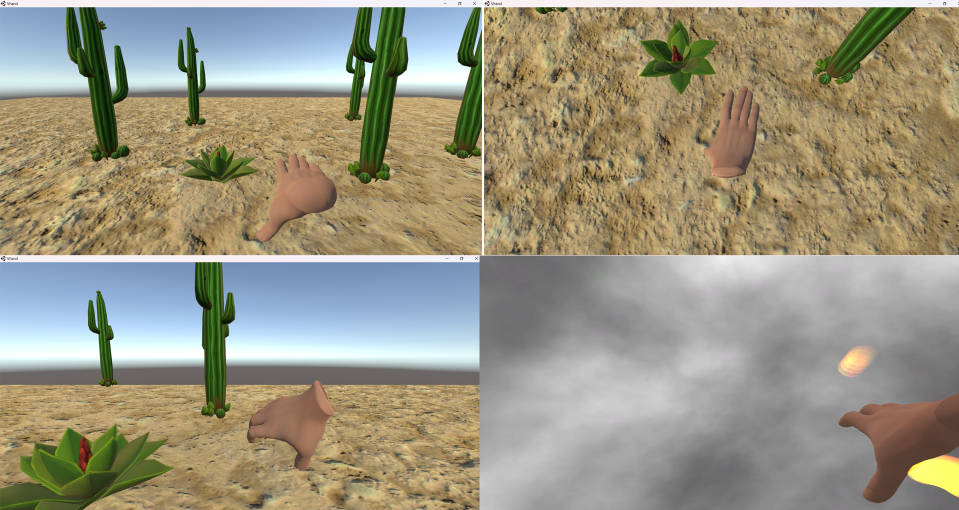
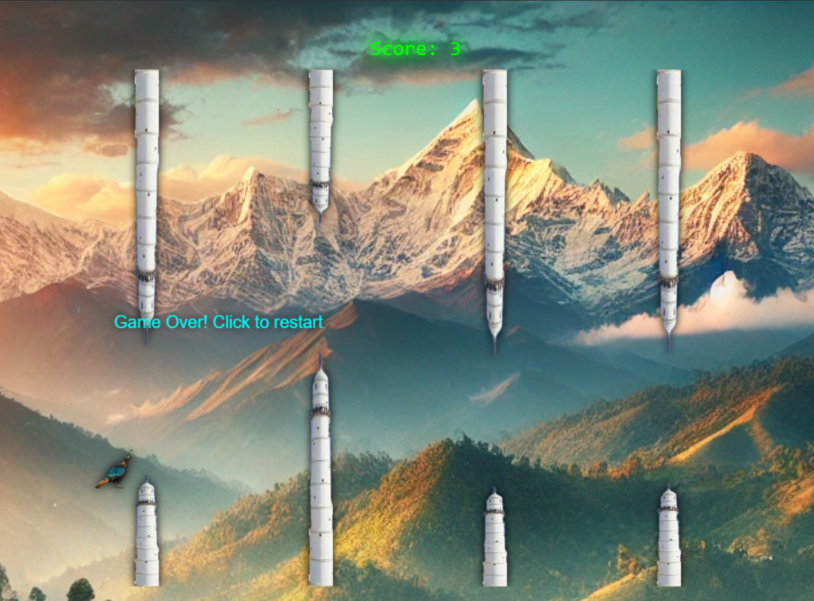
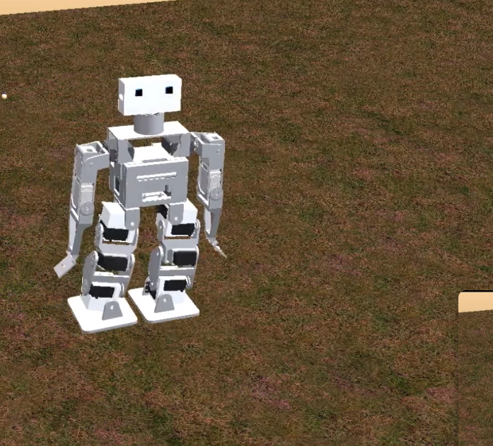
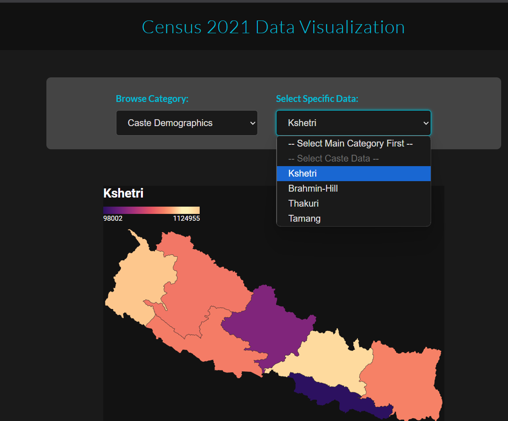

Web Engineering
JavaScript, Node.js, modern HTML/CSS architecture, and feature-first frontend development.
Software Engineer | AI/ML Enthusiast
I build software with a systems mindset: clear architecture, reliable execution, and meaningful user outcomes. My work spans product web engineering, experimental AI workflows, and practical tooling for everyday development.
About
I approach projects by balancing engineering fundamentals with experimentation: define constraints, design robust interfaces, and iterate quickly with feedback. I enjoy building systems that become more useful over time through automation and thoughtful refinement.
My toolkit includes web development, Unity and C#, Linux workflows, shell scripting, and applied machine learning with CV tooling.
Capabilities
JavaScript, Node.js, modern HTML/CSS architecture, and feature-first frontend development.
Linux-based workflows, shell scripting, and repeatable automation for reliable delivery.
Practical experimentation using Python, OpenCV, and model-driven problem-solving.
Unity and C# for immersive simulations and interaction-heavy application experiences.
Projects

Unity + C# based VR simulation with hardware input stream integration via Node.js.


Team-built simulation and vision-driven robotics project transitioning from model to physical behavior.

Data-driven exploration of Nepal's 2021 census using layered visual storytelling.
Education
2021 - 2025
Thapathali Campus, Institute of Engineering, Tribhuvan University
2018 - 2020
Southwestern State College, Basundhara, Kathmandu
2017
Greenland High School, Dhapasi, Kathmandu
Contact
If you are hiring, collaborating, or exploring an idea that needs disciplined engineering execution, reach out directly.
Send Email